Alessia Studio
× Nomads
Cycling Club
Un sitio web en 3D que se recorre como una ruta: cada etapa cuenta algo esencial de Nomads y la última invita a vivir el próximo capítulo.
Alessia Studio
3D web experience
Imagen: la subida de Sa Calobra, de la demo 3D.
Terreno IGN España · AWS Terrain Tiles · © OpenStreetMap contributors
Resumen
Proponemos una experiencia web en 3D construida sobre una carretera real. El visitante la recorre por etapas: en cada una se detiene, lee una idea clave de la marca y avanza con un gesto. Al final, la línea naranja de Nomads sigue hacia el horizonte: el próximo capítulo.
La demo ya existe.
Antes de escribir esta propuesta construimos una demo funcional con la subida real de Sa Calobra. Las imágenes de este documento son capturas de esa demo, no bocetos.
01
Antes de diseñar, estudiamos su material. Esto es lo que el sitio tiene que transmitir, con sus propias palabras.
La marca
“El mundo no se visita, se conquista pedaleando.”
Nacieron en México con una visión audaz: consolidarse como la empresa líder en viajes recreativos bajo un concepto de emociones puras.
La misión
Ofrecer experiencias únicas a quienes ven en la bicicleta una forma de libertad. No solo llevar a un destino: conectar con nuevas culturas y paisajes a través de la pasión y el espíritu de aventura.
La promesa
“Tu única responsabilidad es pedalear. Nosotros nos encargamos de todo.” Staff en cada ruta, vehículo de apoyo, hidratación y nutrición, traslados, alojamiento.
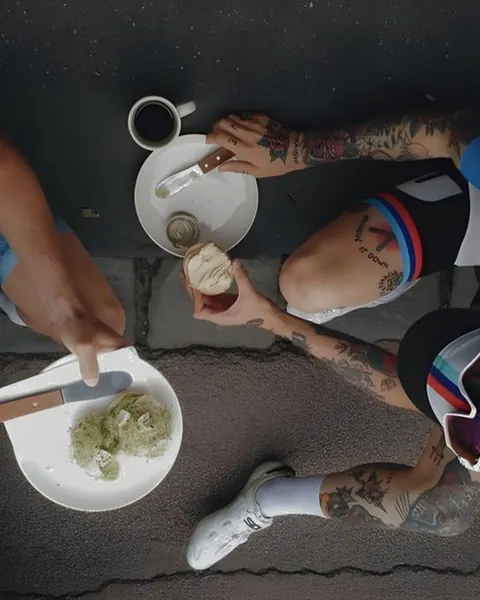
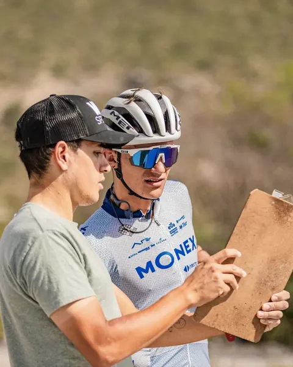
Capítulo 01 · Mallorca
Lo que esto significa para el sitio
La marca es el viaje. Por eso el sitio no empieza hablando de Mallorca: empieza hablando de Nomads. Mallorca es el Capítulo 01, y la estructura queda lista para los siguientes.
02
Qué tiene que lograr el sitio
A quién le hablamos
Perfiles de diseño, a partir de su material.
Quiere subidas míticas en Europa: la Tramuntana, Sa Calobra. Necesita ver la ruta, el desnivel, la dificultad.
Valora el staff, el vehículo de apoyo, el hotel, el coach. Necesita confianza: personas reales y una promesa clara.
Le atrae el viaje, pero se pregunta si podrá. Necesita ver que hay días fáciles, intermedios y difíciles: “¿Cuál es tu nivel?”.
Por Instagram o por un enlace en WhatsApp. Todo se diseña primero para el celular y después para la computadora.
03
El corazón del sitio es la carretera real de Sa Calobra, reconstruida en 3D con datos geográficos oficiales: 9,4 km y 660 m de desnivel. Sobre ella corre una línea naranja, el hilo de la marca. El visitante avanza por etapas, como en un viaje Nomads.
La entrada: la “M” de Nomads se convierte en carretera
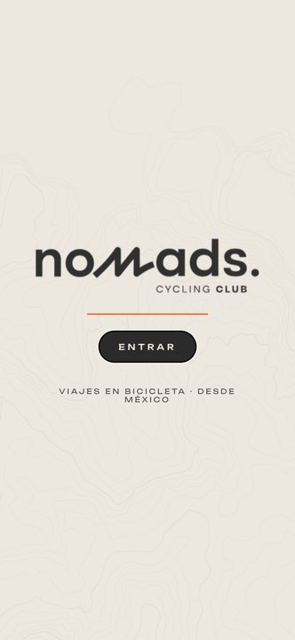
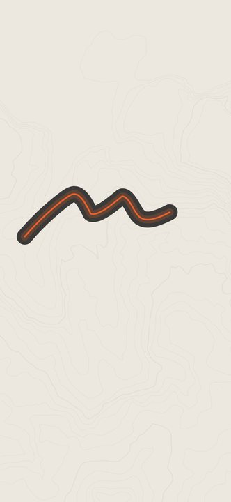
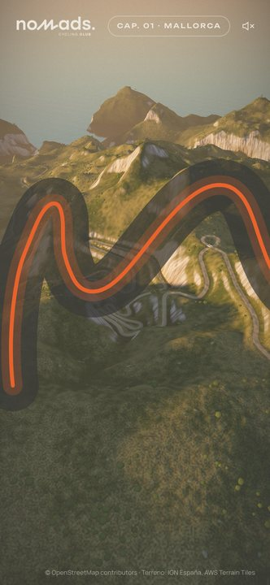
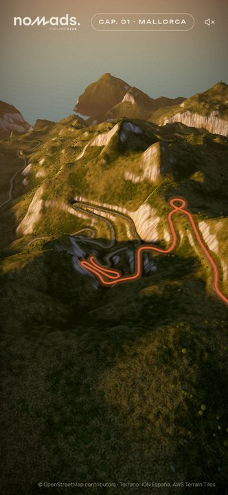
Cómo funciona
Por qué nadie se pierde
04
Cada etapa tiene un encuadre propio, un mensaje y una acción. La información importante llega en el orden en que la necesita quien está decidiendo.
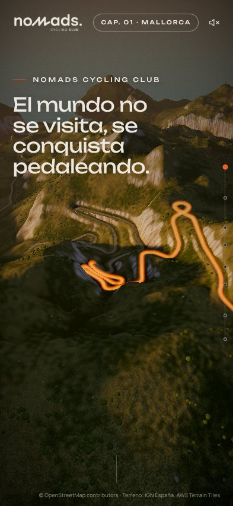
“El mundo no se visita, se conquista pedaleando.” La línea ya está sobre los tornanti.
Desliza para empezar
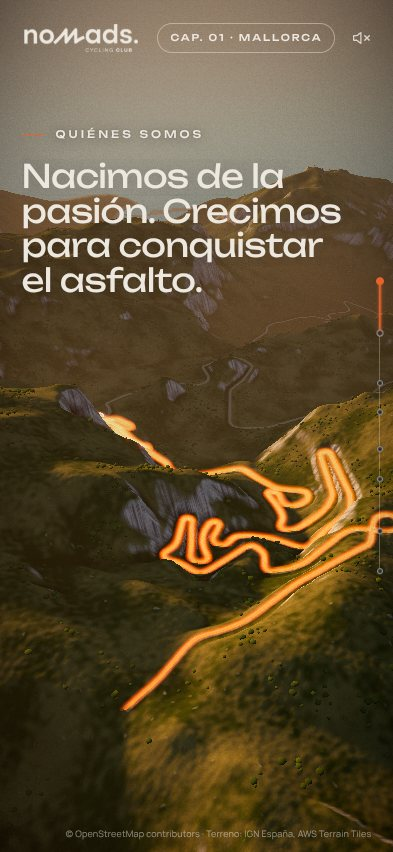
“Nacimos de la pasión. Crecimos para conquistar el asfalto.” La línea baja entre las curvas.
Desliza
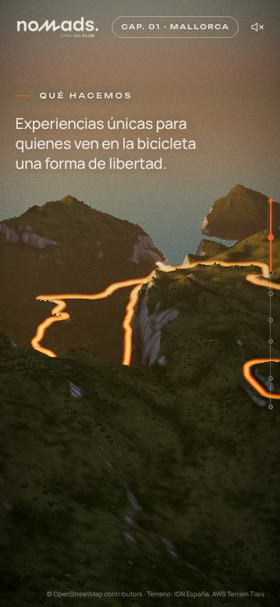
Experiencias únicas para quienes ven en la bicicleta una forma de libertad. La línea llega al mar.
Desliza
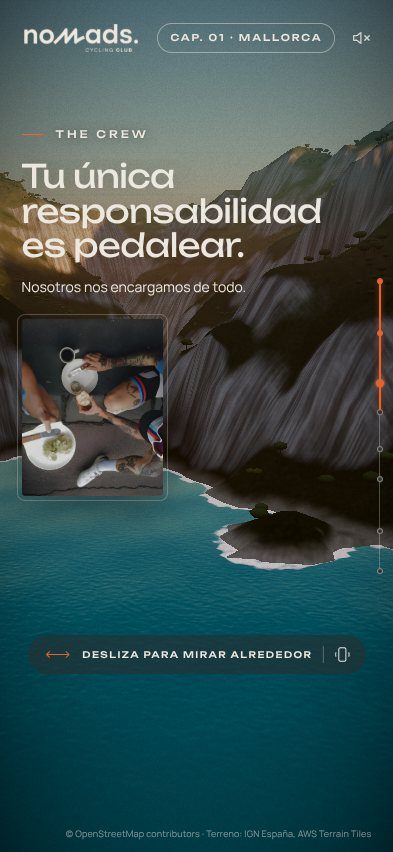
“Tu única responsabilidad es pedalear.” Foto real del equipo, sobre la cala del puerto.
Mira alrededor (360°)
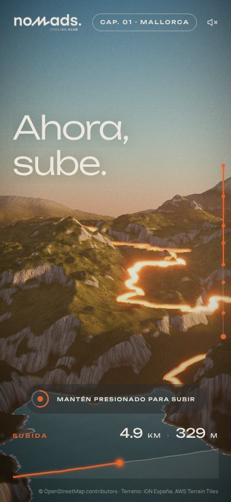
El ciclista sube mientras se mantiene el dedo presionado. El perfil real de la subida se llena.
Mantén presionado
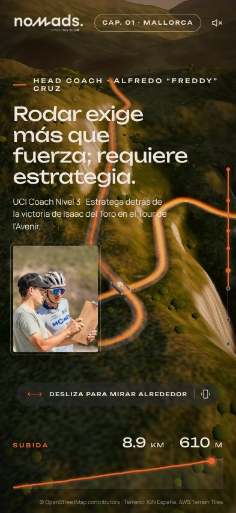
Freddy Cruz, con foto y logros, en el Nus de sa Corbata: “Rodar exige más que fuerza; requiere estrategia.”
Mira alrededor (360°)
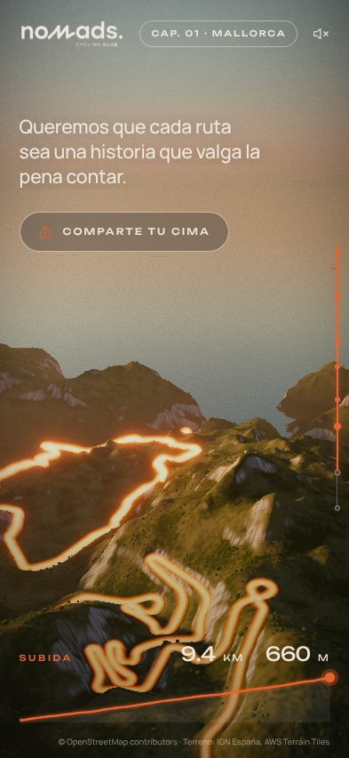
Toda la subida y el mar al atardecer. “Queremos que cada ruta sea una historia que valga la pena contar.”
Comparte tu cima
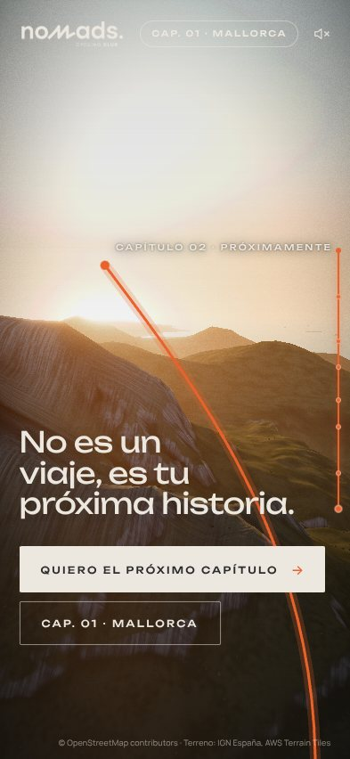
La línea sigue hacia el horizonte: “Capítulo 02 · Próximamente”. Contacto y viaje completo.
Quiero el próximo capítulo
05
Cada efecto tiene una función: emocionar, explicar o llevar a la acción. Nada está ahí solo para lucirse.
Datos geográficos oficiales: cada curva está donde está en la realidad.
El hilo de la marca: baja al mar, sube a la cima, se vuelve línea del tiempo y sigue al próximo capítulo.
Una entrada que convierte el logo en la ruta. Se recuerda.
Encuadres casi quietos, al atardecer. Cómodo de ver, sin mareos.
En el puerto y en el Nus de sa Corbata: con el dedo o con el giroscopio del celular.
La subida cuesta un pequeño esfuerzo, como en la bici. Es el momento que se queda en la memoria.
El perfil real de altimetría, con los km y metros que suben junto al ciclista.
Imagen 1080×1920 con la vista 3D, el logo y los datos de la subida, lista para Instagram.
La línea se endereza y muestra los días del viaje; un filtro resalta los días según el nivel.
Viento, rueda libre y el “clac” de un cambio de marcha al entrar. Siempre opcional.
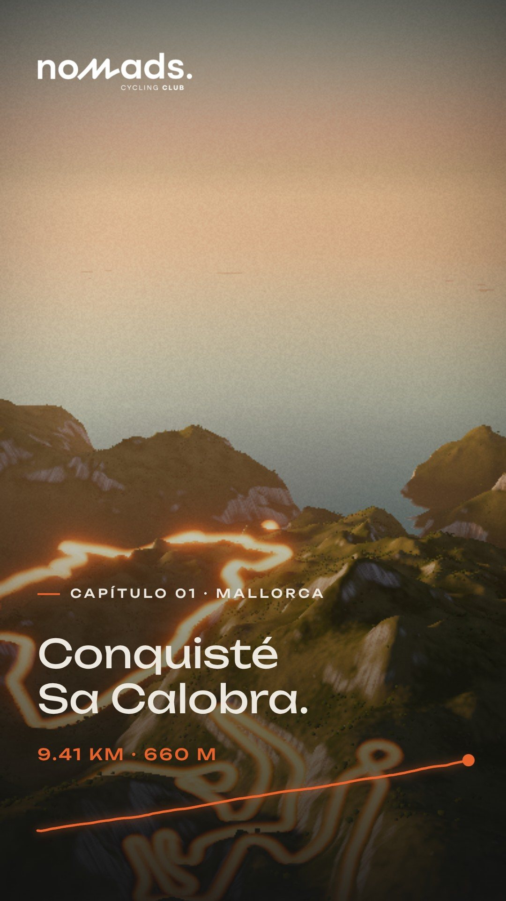
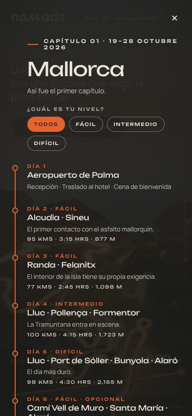
Tecnología y rendimiento
Se abre con un enlace. Sin apps ni descargas: WebGL estándar en cualquier navegador moderno.
Ligero. La experiencia completa pesa unos 3 MB. Objetivo: 60 fps en iPhone.
Para todos. Versión de reserva para celulares sin 3D y respeto de la opción “reducir movimiento”.
Datos: IGN España (modelo digital del terreno de 5 m), AWS Terrain Tiles, © OpenStreetMap contributors. Herramientas: Three.js, GSAP.
06
El sitio usa solo la paleta de Nomads. El atardecer de la escena 3D está calibrado para que el naranja de la línea destaque siempre.
#2B2B2BFondos, textos y paneles. La base sobria de la marca.
#EDE8DFTextos sobre el 3D y la pantalla de entrada.
#7E93A6Detalles y datos secundarios.
#E8622CLa línea, las acciones, los puntos de la ruta.
Proporción de uso
El naranja se usa poco, a propósito: así cada vez que aparece señala algo importante.
Tipografía
El mundo no se visita, se conquista pedaleando.
Unbounded · titulares, cifras y etiquetas
Ofrecer experiencias únicas a quienes ven en la bicicleta una forma de libertad. Textos claros, cómodos de leer en el celular.
Manrope · textos
La línea como recurso de marca
La misma línea naranja recorre la carretera, marca el avance, se convierte en la línea del tiempo del viaje y apunta al próximo destino. Es un elemento que Nomads puede usar también fuera del sitio: redes, presentaciones, kits de viaje.
Fotografía
Personas reales del equipo, en ruta. Una foto por etapa, como una postal, nunca un collage. Recomendamos usar fotos propias de los viajes, con permiso de uso.
07
Una sola propuesta, completa. Así se compone el precio.
Diseño a medida con la información esencial de Nomads y contacto directo por WhatsApp. Adaptado a celular, tablet y computadora.
La ruta en 8 etapas: entrada con la M, vista de 360°, “Mantén presionado para subir”, perfil de la subida, “Comparte tu cima”, el viaje como línea del tiempo, sonido.
Inicio 3D · Capítulos (el viaje día por día, niveles, qué incluye) · Nosotros / The crew · Galería · Contacto. Selector de idioma.
Total de la propuesta
Sitio + experiencia 3D + 5 páginas en 2 idiomas
2.000 €
Incluido
Desde el segundo año
Dominio, hosting y asistencia básica200 € / año
Extra opcional
Kit social250 €
Imágenes y animaciones creadas desde la escena 3D para Instagram: historias, publicaciones y portadas.
08
Un proceso corto y claro. Dos semanas desde la confirmación hasta el sitio publicado.
Semana 1
Semana 2
Forma de pago
al confirmar el proyecto
a la entrega
Qué necesitamos de Nomads
Pensado para crecer
El sitio se entrega con la estructura por capítulos: Mallorca es el Capítulo 01 y cada nuevo viaje se suma como un capítulo más, con su ruta, sus días y sus niveles, sin rehacer el sitio.
Alessia Studio
3D web experience
Diseñamos experiencias web en 3D: sitios que no se leen, se recorren. Para Nomads ya construimos la primera etapa: una demo funcional de Sa Calobra que pueden abrir hoy en su celular.
Sitio
www.alessia.studioPróximo paso